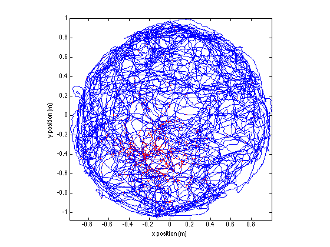
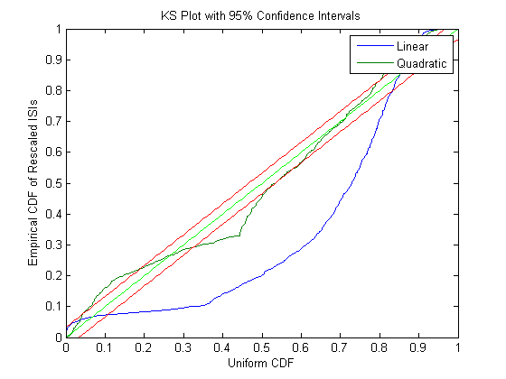

Analysis Examples
This is an example on the standard approach to fitting GLM models to spike train data. This data set was obtained at the Society For Neuroscience '08 Workshop on Workshop on Neural Signal Processing Compare to analysis with Neural Spike Analysis Toolbox
Contents
Example 1: Tradition Preliminary Analysis
% Script glm_part1.m % MATLAB code to visualize data, fit a GLM model of the relation between % spiking and the rat's position, and visualize this model for the % Neuroinformatics GLM problem set. % The code is initialized with an overly simple GLM model construction. % Please improve it! % load the rat trajectory and spiking data; close all; warning off; load('glm_data.mat');
visualize the raw data
figure; plot(xN,yN,x_at_spiketimes,y_at_spiketimes,'r.'); axis tight square; xlabel('x position (m)'); ylabel('y position (m)');
fit a GLM model to the x and y positions.
[b,dev,stats] = glmfit([xN yN (xN.^2-mean(xN.^2)) (yN.^2-mean(yN.^2)) (xN.*yN-mean(xN.*yN))],spikes_binned,'poisson'); figure; errorbar(1:length(b), b, stats.se,'.'); xticks=1:length(b); xtickLabels= {'baseline','x','y','x^2','y^2','x*y'}; set(gca,'xtick',xticks,'xtickLabel',xtickLabels);

visualize your model construct a grid of positions to plot the model against...
figure; [x_new,y_new]=meshgrid(-1:.1:1); y_new = flipud(y_new); x_new = fliplr(x_new); % compute lambda for each point on this grid using the GLM model lambda = exp(b(1) + b(2)*x_new + b(3)*y_new + b(4)*x_new.^2 + b(5)*y_new.^2 + b(6)*x_new.*y_new); lambda((x_new.^2+y_new.^2>1))=nan; %plot lambda as a function position over this grid h_mesh = mesh(x_new,y_new,lambda,'AlphaData',0); get(h_mesh,'AlphaData'); set(h_mesh,'FaceAlpha',0.2,'EdgeAlpha',0.8,'EdgeColor','b'); hold on; plot3(cos(-pi:1e-2:pi),sin(-pi:1e-2:pi),zeros(size(-pi:1e-2:pi))); hold on; plot(xN,yN,x_at_spiketimes,y_at_spiketimes,'r.'); axis tight square; xlabel('x position (m)'); ylabel('y position (m)');

Compare a linear model versus a Gaussian GLM model.
[b_lin,dev_lin,stats_lin] = glmfit([xN yN],spikes_binned,'poisson'); [b_quad,dev_quad,stats_quad] = glmfit([xN yN xN.^2 yN.^2 xN.*yN],spikes_binned,'poisson'); lambdaEst_lin = exp( b_lin(1) + b_lin(2)*xN+b_lin(3)*yN); % based on our GLM model with the log "link function" lambdaEst_quad = exp( b_quad(1) + b_quad(2)*xN+b_quad(3)*yN+b_quad(4)*xN.^2 +b_quad(5)*yN.^2 +b_quad(6)*xN.*yN);
Make the KS Plot
% ******* K-S Plot ******************* % graph the K-S plot and confidence intervals for the K-S statistic %first generate the conditional intensity at each timestep % ** Adjust the below line according to your choice of model. % remember to include a column of ones to multiply the default constant GLM parameter beta_0** % Use your parameter estimates (b) from glmfit along % with the covariates you used (xN, yN, ...) lambdaEst=[lambdaEst_lin, lambdaEst_quad]; timestep = 1; lambdaInt = 0; j=0; KS=[]; for t=1:length(spikes_binned), lambdaInt = lambdaInt + lambdaEst(t,:)*timestep; if (spikes_binned(t)), j = j + 1; KS(j,:) = 1-exp(-lambdaInt); lambdaInt = [0 0]; end; end; KSSorted = sort( KS ); N = length( KSSorted); figure; plot( ([1:N]-.5)/N, KSSorted, 0:.01:1,0:.01:1, 'g',0:.01:1, [0:.01:1]+1.36/sqrt(N), 'r', 0:.01:1,[0:.01:1]-1.36/sqrt(N), 'r' ); axis( [0 1 0 1] ); xlabel('Uniform CDF'); ylabel('Empirical CDF of Rescaled ISIs'); title('KS Plot with 95% Confidence Intervals'); legend('Linear','Quadratic');